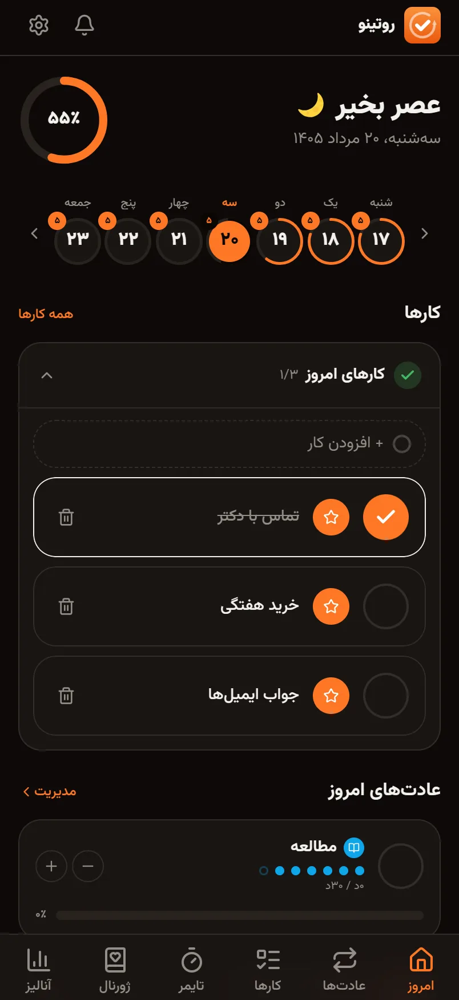
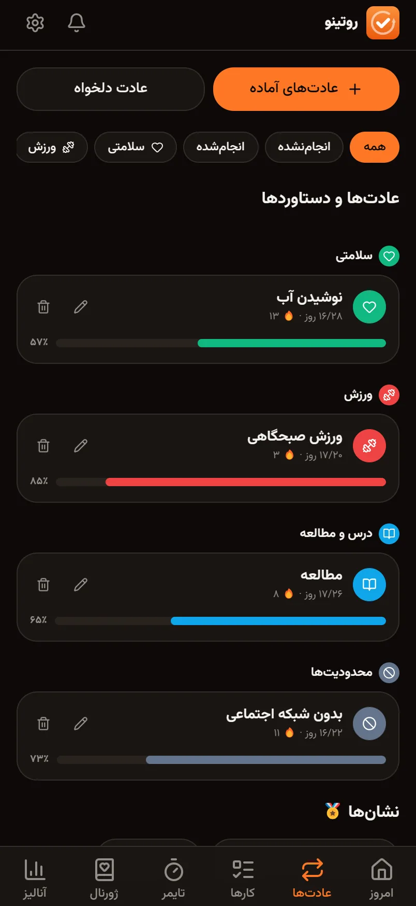
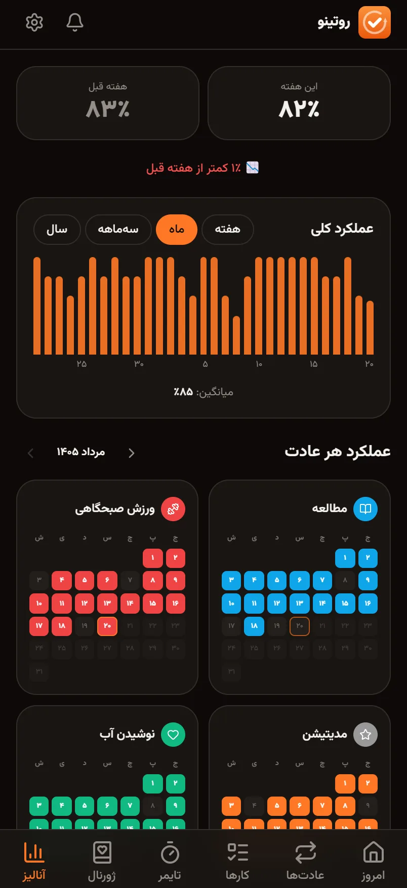
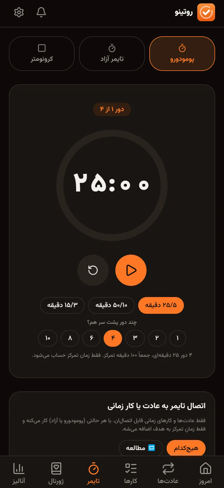
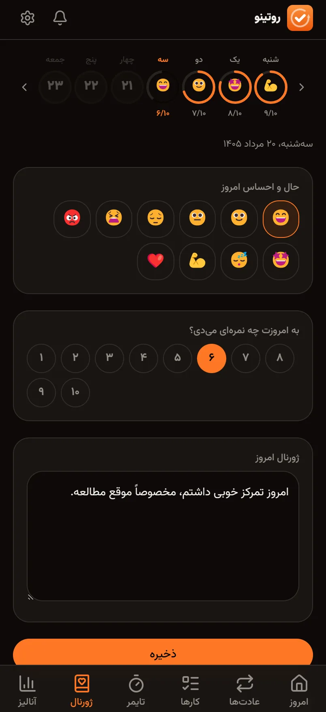

اسکرول کن ↓
درصد پیشرفت روز، کارها، و عادتهایی که مانده. یک صفحه، بدون گشتن.

چند روز پشت سر هم انجامش دادهای و این ماه چقدر جلو رفتهای — روی همان کارت.

این هفته کنار هفتهی قبل. ماه و سهماهه هم هست، با شبکهی رنگیِ هر عادت.

پومودورو که به عادتت وصل است و خودش ثبت میشود. چیزی دستی وارد نمیکنی.

یک ایموجی، یک نمره. یک ماه بعد که برمیگردی، خودت الگوها را میبینی.

اینجا ته صحنه است. بقیهی صفحه (تم روشن/تاریک، دستگاهها، فوتر) دستنخورده باقی میماند — این پیشنمایش فقط همان یک بخشِ چرخان را نشان میدهد.